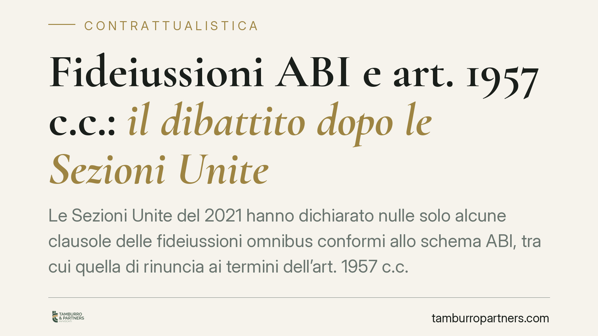

Fideiussioni ABI e art. 1957 c.c.: il dibattito dopo le Sezioni Unite
Le Sezioni Unite del 2021 hanno dichiarato nulle solo alcune clausole delle fideiussioni omnibus conformi allo schema ABI, tra cui quella di rinuncia ai termini dell'art. 1957 c.c. Caduta quella deroga, rivive il termine di decadenza semestrale. Ma un tema resta discusso: quale iniziativa del creditore basta a evitarla. Una questione che incide direttamente sulla posizione del garante.

Il quadro: cosa hanno deciso le Sezioni Unite
Con la sentenza n. 41994 del 30 dicembre 2021, le Sezioni Unite della Cassazione hanno affrontato le fideiussioni omnibus predisposte in conformità allo schema contrattuale diffuso dall'ABI, oggetto del provvedimento della Banca d'Italia n. 55 del 2 maggio 2005, che aveva accertato il carattere anticoncorrenziale di tre clausole di quel modello.
La Corte ha optato per la nullità parziale: sono nulle le sole tre clausole censurate (reviviscenza, rinuncia ai termini dell'art. 1957 c.c. e sopravvivenza della garanzia), mentre il resto del contratto di fideiussione resta valido ed efficace, salvo che risulti che i contraenti non lo avrebbero concluso senza quelle pattuizioni. È bene chiarire subito un punto: le SS.UU. 41994/2021 hanno deciso *questo*. Non hanno stabilito quale atto del creditore sia idoneo a impedire la decadenza ex art. 1957 c.c. Quel profilo resta oggetto di distinto dibattito interpretativo.
Il meccanismo dell'art. 1957 c.c.
L'art. 1957 del codice civile prevede che il fideiussore resti obbligato anche dopo la scadenza dell'obbligazione principale, ma a due condizioni. Il creditore deve proporre le proprie istanze contro il debitore entro sei mesi dalla scadenza (dodici, in alcune ipotesi) e deve poi coltivarle con diligenza. Se non lo fa, il fideiussore è liberato.
Si tratta di una norma di tutela del garante: impedisce che l'inerzia del creditore verso il debitore principale ricada sul fideiussore, prolungandone l'esposizione a tempo indeterminato. Nelle fideiussioni omnibus su schema ABI questa protezione era neutralizzata dalla clausola di rinuncia ai termini. Caduta quella clausola per nullità, il termine semestrale torna pienamente operativo.
La questione ancora discussa
Ripristinato il termine dell'art. 1957 c.c., si pone il tema di cosa il creditore debba fare entro i sei mesi. La formula "proporre le proprie istanze" ha alimentato posizioni diverse in giurisprudenza: secondo un orientamento più rigoroso occorre un'iniziativa giudiziale; secondo un altro può essere sufficiente, in determinati contesti, un'attività stragiudiziale seria e documentata, purché seguita da diligente coltivazione della pretesa.
Allo stato, non esiste una pronuncia delle Sezioni Unite che risolva questo specifico quesito. Chi affronta un contenzioso su fideiussioni ABI deve quindi muoversi in un terreno interpretativo non consolidato, valutando caso per caso la natura e la tempestività degli atti compiuti dal creditore.
Implicazioni pratiche
Per il fideiussore, la nullità parziale non fa venir meno la garanzia, ma restituisce un'arma difensiva: se il creditore non ha attivato per tempo le proprie istanze contro il debitore principale, o non le ha coltivate con diligenza, può profilarsi la liberazione ex art. 1957 c.c. La difesa richiede però la ricostruzione puntuale della cronologia degli atti e della loro idoneità.
Per la banca creditrice, l'effetto è opposto: il termine semestrale, prima neutralizzato dalla clausola nulla, torna a incidere sulla gestione del recupero. Diventa centrale documentare tempi e modalità delle iniziative verso il debitore, evitando periodi di inerzia che possano essere letti come mancata coltivazione della pretesa.
Cosa fare in concreto
- Reperire il testo integrale della fideiussione e verificare la presenza delle tre clausole censurate riconducibili allo schema ABI.
- Ricostruire la cronologia degli atti del creditore verso il debitore principale, individuando la scadenza dell'obbligazione e il decorso del termine semestrale.
- Distinguere gli atti stragiudiziali dalle iniziative giudiziali, valutandone la tempestività e la successiva coltivazione.
- Verificare se il contratto sopravvive alla nullità parziale o se ricorrono elementi per sostenere che le parti non lo avrebbero concluso senza le clausole nulle.
- È opportuno un vaglio tecnico della posizione prima di riscontrare richieste di pagamento o di intraprendere azioni di recupero, data la natura ancora aperta della questione interpretativa.
Osservazioni conclusive
La sentenza del 2021 ha dato un assetto chiaro al problema della validità delle fideiussioni ABI, ma ha spostato l'attenzione su un profilo diverso e ancora dibattuto: quale condotta del creditore evita la decadenza. È un tema che va affrontato con analisi documentale e non con automatismi, poiché l'esito dipende dai fatti concreti di ciascun rapporto.
---
*Contributo informativo a cura di Tamburro & Partners - Avv. Giuseppe Tamburro. Non costituisce parere legale.*
Ogni contratto ha il suo equilibrio.
Se vuoi una revisione delle clausole o una redazione su misura, scrivi allo studio. Ti rispondiamo entro un giorno lavorativo.